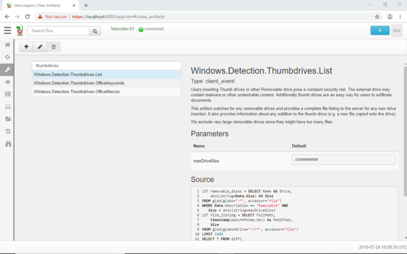

The recent Velociraptor release (0.3.3) features a client side buffer. What does this do and how does it change Velociraptor’s approach to incident response?
The Velociraptor client is really just a (Velociraptor Query Language) VQL execution engine. When collecting an artifact, the client running on the endpoint, simply executes the VQL and streams rows from the query to the server as they occur.
Previously the client would attempt to upload the rows periodically to the server, and while this upload was taking place, the VQL query was paused. If the server was unavailable (for example if the endpoint was not on the internet), the VQL query simply paused until the rows could be sent.
In the recent 0.3.3 release we introduced a local file buffer between the execution engine and the server communication thread. Now the Velociraptor client’s VQL engine operates independently of the communication thread, and is not paused if the server is not reachable. This is illustrated in the diagram below:
By default the file on disk is allowed to grow to 1GB in size, but usually it is truncated to zero bytes if the client is online and communicating with the server.
Using a file on disk allows us to run the VQL query as quickly as possible. For example, some artifacts require collection of many files. Since network traffic is typically much slower than disk activity, previously we were only able to collect data at the speed at which we could send it on the network. An artifact collection could take quite some hours if there was a lot of data to upload and a slow network link.
With the new system we are allowed to buffer up to 1GB of data (which also includes uploaded files) before we have to pause the query. This allows many artifacts to completely finished — even if the client is not online. Later when then client resumes connection with the server, that data can be uploaded over time — even if the network is very slow.
One of the differences between Velociraptor and other tools is that VQL queries allow us to build a complete monitoring and response framework.
Typically EDR tools deploy sensors which collect data and feed it to a back-end system. Processes on the back-end system detect anomalous activity and respond to this either by gather more information or alerting. This long latency round trip between detection and response delays the response activity and is only possible when the client is connected and online.
With the recent Velociraptor release, we can deploy monitoring VQL artifacts which simply watch the endpoint for certain events. These events can then be automatically acted upon — typically to implement response actions (e.g. kill a bad process) or to enrich the event information collected (e.g. acquire extra hashes or the binaries of suspicious files).
Because the file buffer allows the VQL engine to operate even when the client is not online, VQL event monitoring queries are not interrupted and continue to work autonomously without involvement from the server.
An example of an event monitoring artifact is the Windows.Detection.Thumbdrives.List artifact. This artifact watches for any newly inserted USB thumb drive and simply lists the files on it. In some environments it is interesting to see any newly added files on a USB removable drive.
 The Windows.Detection.Thumbdrives.List artifact watches for newly added removable drives and reports new files added to them.
Previously, when a thumb drive was added, Velociraptor sent the file listing to the server immediately. However, if the endpoint was offline, this data blocked further monitoring by the query.
Starting with the 0.3.3 release, Velociraptor will now queue the messages in its local file buffer immediately, and transfer the data to the server when it can — even if it is currently not on the internet or online. The messages will simply be forwarded to the server at a later time.
This feature allows Velociraptor to monitor the end point without being connected to the server at all. In effect this implements a response plan: The endpoint is given a plan of what to do in the case certain events occur (in the form of monitoring VQL queries) and can implement this plan autonomously without needing to contact the server.